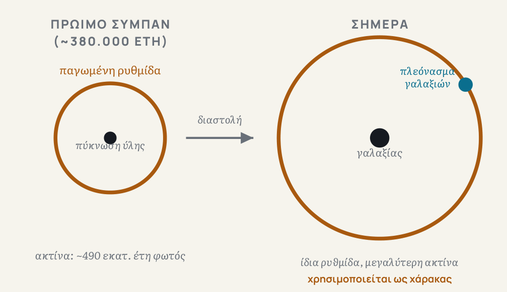

Πάνω σε ένα βουνό στην Αριζόνα, ένα τηλεσκόπιο κοιτάζει κάθε βράδυ χιλιάδες γαλαξίες ταυτόχρονα. Λέγεται DESI, και η δουλειά του είναι να φτιάξει τον μεγαλύτερο τρισδιάστατο χάρτη γαλαξιών που έχει γίνει ποτέ.
Πώς βλέπεις σε τρεις διαστάσεις
Ένας συνηθισμένος χάρτης του ουρανού έχει δύο διαστάσεις: βλέπεις πού βρίσκεται κάθε γαλαξίας πάνω στον νυχτερινό ουρανό, όχι πόσο μακριά είναι. Το DESI προσθέτει την τρίτη διάσταση, το βάθος, μετρώντας την απόσταση κάθε γαλαξία.
Το κάνει με ένα κόλπο: όσο πιο μακριά είναι ένας γαλαξίας, τόσο πιο κόκκινο φαίνεται το φως του, επειδή το σύμπαν διαστέλλεται και τεντώνει το φως καθώς ταξιδεύει. Μετρώντας πόσο «κοκκίνισε» το φως ενός γαλαξία, το DESI υπολογίζει πόσο μακριά βρίσκεται. Για να το κάνει αυτό για χιλιάδες γαλαξίες τη φορά, το τηλεσκόπιο έχει 5.000 μικρές ρομποτικές «κεραίες» οπτικών ινών, που στρέφονται αυτόματα η καθεμιά προς έναν διαφορετικό γαλαξία και πιάνουν το φως του.
Μέσα σε λίγα χρόνια λειτουργίας, το DESI έχει ήδη μετρήσει την απόσταση εκατομμυρίων γαλαξιών και quasars, αντικειμένων τόσο λαμπρών που φαίνονται από άκρη σε άκρη του ορατού σύμπαντος.
Το DESI βρίσκεται στο τηλεσκόπιο Mayall, στο Kitt Peak της Αριζόνα. Χρησιμοποιεί 5.000 ρομποτικές οπτικές ίνες και έχει μετρήσει πάνω από 14 εκατομμύρια γαλαξίες και quasars στη μέχρι τώρα ανάλυσή του (2025).
Γιατί η Γη είναι στο κέντρο
Όταν δεις τον χάρτη που προκύπτει, κάτι σου κάνει εντύπωση: η Γη είναι ακριβώς στη μέση. Δεν είναι σύμπτωση, ούτε σημαίνει ότι βρισκόμαστε σε προνομιακή θέση. Ένας χάρτης δείχνει πάντα τα πράγματα σε σχέση με το σημείο απ' όπου τα μετράς, όπως ένας χάρτης δρόμων με «εσύ είσαι εδώ» στο κέντρο. Το κέντρο δεν είναι το πιο σημαντικό σημείο του κόσμου. Είναι απλώς το σημείο απ' όπου κοιτάζεις.
Ένας παλιός ήχος που έγινε χάρακας
Το DESI δεν χαρτογραφεί μόνο πού βρίσκονται οι γαλαξίες. Ψάχνει και ένα συγκεκριμένο μοτίβο μέσα στον χάρτη: μια απόσταση που επαναλαμβάνεται ελαφρώς πιο συχνά από κάθε άλλη.
Η προέλευσή της είναι εντυπωσιακή. Πολύ νωρίς, γύρω στα πρώτα 380.000 χρόνια της ζωής του σύμπαντος, η ύλη ήταν τόσο καυτή και πυκνή που συμπεριφερόταν σαν υγρό, και μέσα σε αυτό το υγρό διαδίδονταν ηχητικά κύματα, ακριβώς όπως ο ήχος ταξιδεύει μέσα στο νερό. Όταν το σύμπαν κρύωσε αρκετά ώστε να σχηματιστούν τα πρώτα άτομα, αυτά τα κύματα «πάγωσαν» στη θέση τους, αφήνοντας ένα ελαφρύ αποτύπωμα: γύρω από κάθε πύκνωση ύλης έμεινε μια σφαιρική «φυσαλίδα», μια περιοχή όπου η ύλη είναι ελαφρώς πιο πυκνή απ' ό,τι αλλού.

Αυτή η «φυσαλίδα» μεγάλωσε μαζί με το υπόλοιπο σύμπαν, καθώς αυτό διαστελλόταν, αλλά το μέγεθός της παρέμεινε γνωστό: την ξέρουμε από τη φυσική του πρώιμου σύμπαντος. Έτσι λειτουργεί σαν χάρακας σταθερού μήκους. Μετρώντας πόσο μεγάλη φαίνεται αυτή η «φυσαλίδα» σε γαλαξίες διαφορετικής απόστασης, το DESI υπολογίζει πόσο γρήγορα διαστελλόταν το σύμπαν σε κάθε εποχή του παρελθόντος. Το φαινόμενο ονομάζεται ακουστικές ταλαντώσεις βαρυονίων, αλλά αρκεί να το θυμάσαι ως «ο ήχος που έγινε χάρακας».
Μια ένδειξη που προκαλεί συζήτηση
Χρησιμοποιώντας αυτόν τον χάρακα, το DESI βρήκε κάτι που δεν το περίμενε κανείς με σιγουριά: ενδείξεις ότι η σκοτεινή ενέργεια, η δύναμη που κάνει το σύμπαν να διαστέλλεται όλο και πιο γρήγορα, μπορεί να μην είναι σταθερή στον χρόνο, όπως υπέθετε μέχρι τώρα το κυρίαρχο μοντέλο, αλλά να αλλάζει.
Ενδείξεις, όχι ανακάλυψη. Η στατιστική σιγουριά της ένδειξης αλλάζει ανάλογα με ποια άλλα δεδομένα προστίθενται στην ανάλυση, και δεν έχει φτάσει το όριο που απαιτείται συνήθως για να μιλήσουμε για ανακάλυψη. Οι ίδιοι οι ερευνητές του DESI είναι προσεκτικοί: λένε ότι, αν δεν υπάρχει κάποιο άγνωστο σφάλμα στη μέτρηση, τότε το κυρίαρχο μοντέλο πρέπει να επανεξεταστεί, χωρίς όμως να το θεωρούν βέβαιο ακόμα.
Κάθε χάρτης είναι η άποψη κάποιου. Ο χάρτης του DESI δείχνει το σύμπαν όπως φαίνεται από τη Γη, με τη Γη στο κέντρο, όχι επειδή έτσι είναι πραγματικά το σύμπαν, αλλά επειδή έτσι φαίνεται σε όποιον μετράει από εδώ. Ένας αστρονόμος σε άλλον γαλαξία θα έφτιαχνε τον δικό του χάρτη, με το δικό του κέντρο. Το ερώτημα δεν είναι ποιος χάρτης είναι «σωστός», αλλά ποια χαρακτηριστικά του χάρτη ανήκουν στο ίδιο το σύμπαν, και ποια οφείλονται απλώς στο σημείο απ' όπου κοιτάζουμε.
Αν κάθε χάρτης είναι η άποψη κάποιου, πώς ξεχωρίζεις το σύμπαν από τη θέση σου μέσα σε αυτό;
Πηγές και περαιτέρω ανάγνωση
- DESI Collaboration, «DESI DR2 Results II: Measurements of Baryon Acoustic Oscillations and Cosmological Constraints», arXiv:2503.14738 (2025)
- Center for Astrophysics | Harvard & Smithsonian, «Dark Energy Spectroscopic Instrument (DESI)» — τεχνικά στοιχεία οργάνου
- KIPAC / Stanford, «Dark Energy Spectroscopic Instrument» — περιγραφή λειτουργίας και στόχων
- NASA Goddard, «Baryon Acoustic Oscillations» (εκπαιδευτικό υλικό για τις ακουστικές ταλαντώσεις βαρυονίων)
- W. J. Percival, «Baryon acoustic oscillations: A cosmological ruler», Physics Today 70(12), 32 (2017)
- J. R. Gott III et al., «A Map of the Universe», The Astrophysical Journal 624, 463 (2005)